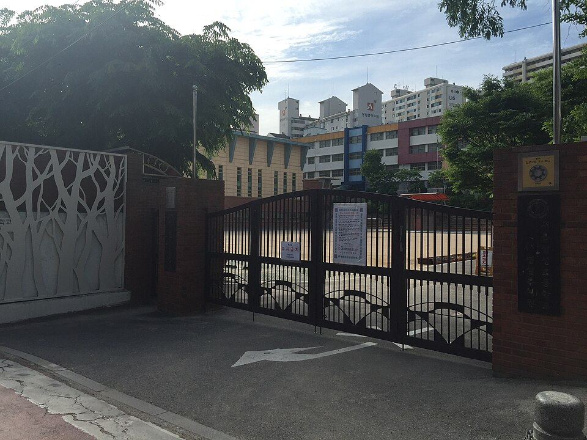

관악구는 봉천동·신림동·남현동이 붙어 있어도 언덕으로 갈려 있어, 집에서 학원까지 가는 길이 지도에서 보이는 것보다 깁니다. 봉천중(봉천중학교)·당곡중(당곡중학교)·인헌중(인헌중학교)·삼성중(삼성중학교) 같은 중학교와 당곡고(당곡고등학교)·구암고(구암고등학교)·남강고(남강고등학교)가 서로 다른 생활권에 있습니다. 저녁 시간이 이동으로 묶이는 학생이라면 집으로 오는 1:1 중등 수학과외나 고등 국어과외를 따로 찾게 됩니다.
오늘은 관악구로 직접 찾아가는 선생님들 가운데 맡는 과목이 서로 다른 두 분을 소개합니다. 한 분은 국어와 사회를 중1부터 고3까지 보는 선생님, 한 분은 수학을 중1부터 고3까지 보는 선생님입니다. 두 분 다 방문과 화상을 모두 진행합니다.
관악구에서 고등 국어과외 문의가 들어오는 시점은 대개 고1 2학기입니다. 중학교 때는 수업을 듣고 외우면 됐는데, 고등학교에서는 처음 보는 지문이 나오면서 점수가 갈리기 시작합니다. 이 선생님을 소개하는 이유는 국어와 사회탐구를 한 사람이 같이 보기 때문입니다. 사회탐구에서 막히는 이유가 개념이 아니라 자료와 선택지를 읽는 방식인 경우가 많은데, 두 과목을 같은 선생님이 보면 그 지점을 따로 설명할 필요가 없습니다.
수업 방식도 분명합니다. 답을 알려 주고 외우게 하는 쪽이 아니라, 학생이 근거를 찾아 말하게 하고 그 과정에서 집중할 부분을 같이 정하는 쪽입니다. 재수학원과 수능 과외 경력이 있어 고등 과정과 수능 유형을 함께 보는 데 익숙합니다. 수업 가능한 시간대가 월~목 오후로 정해져 있어 일정이 맞는지 먼저 확인하시는 편이 좋습니다.
허ㅇ영 선생님 상세 프로필 →관악구에서 중등 수학과외를 따로 찾는 이유는 대개 학년이 올라가면서 설명을 따라가지 못하기 때문입니다. 이 선생님을 소개하는 이유는 중학교부터 고3 이과 과정까지 한 사람이 이어서 볼 수 있기 때문입니다. 중3에서 고1로 넘어가는 자리에서 선생님을 바꾸면 그동안 무엇을 건너뛰었는지 다시 설명해야 하는데, 그 과정이 생략됩니다.
수업은 질문식입니다. 학생이 먼저 설명해 보게 하고 막히는 자리에서 되묻는 방식이라, 아는 것과 안다고 느끼는 것을 가려내는 데 쓰입니다. 학원과 과외를 오래 해 와서 같은 단원에서 학생마다 다르게 막히는 지점을 빨리 짚습니다. 상담 당일에 수준 테스트가 가능해 시작 전에 어디가 비어 있는지 확인하고 범위를 정할 수 있습니다.
나ㅇ채 선생님 상세 프로필 →학교마다 진도와 시험 범위가 달라서, 학교별로 준비법을 따로 정리해 두었습니다.
👉 관악구 국어과외 선생님 · 관악구 수학과외 선생님 · 관악구 관리 학교 전체 보기